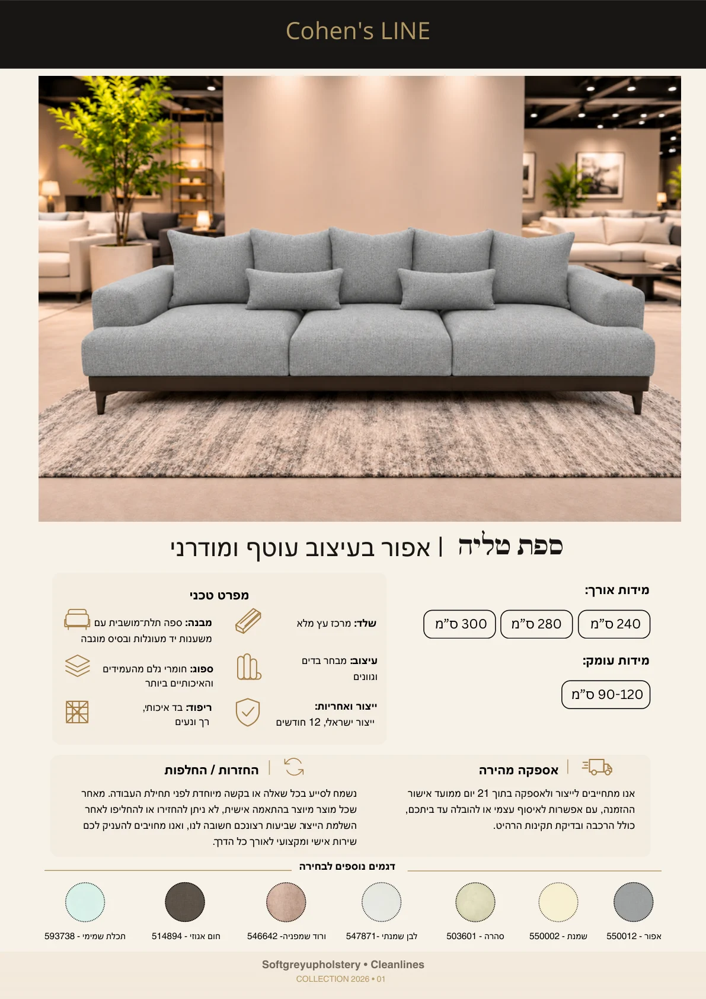

עיצוב קטלוגים ועימוד
פרטים קטנים. תמונה שלמה.
שישה קטלוגים שעיצבתי עבור Cohen’s Line. שפה עקבית, תמונות מוצר ומפרט מסודר — עם התאמה לאופי של כל קולקציה. אפשר לדפדף בכל הקטלוגים כאן באתר או לפתוח ולהוריד את קובצי ה־PDF המקוריים.
עיצוב קטלוגים ועימוד
שישה קטלוגים שעיצבתי עבור Cohen’s Line. שפה עקבית, תמונות מוצר ומפרט מסודר — עם התאמה לאופי של כל קולקציה. אפשר לדפדף בכל הקטלוגים כאן באתר או לפתוח ולהוריד את קובצי ה־PDF המקוריים.
מיתוג לעסק, קטלוג חדש או חומר לדפוס — אשמח לשמוע מה אתם רוצים ליצור.